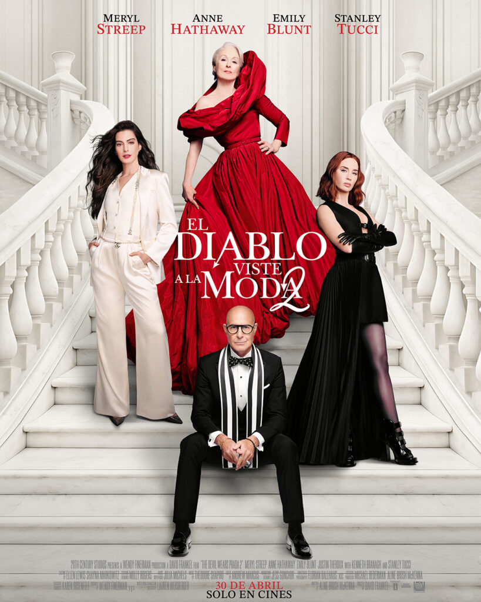
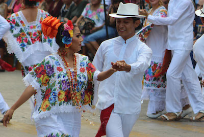
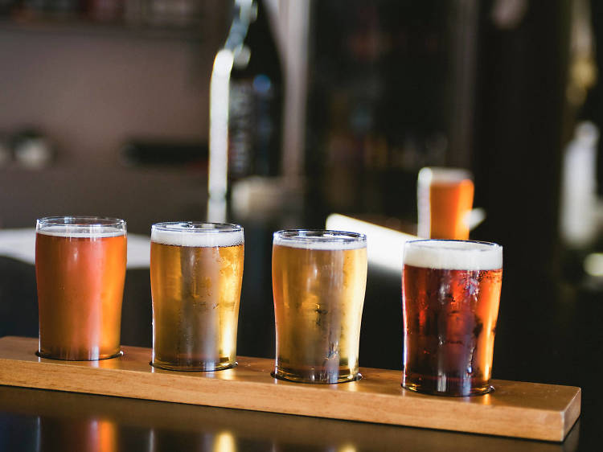

El descanso que tu mente merece
Break, tu mente también necesita recargarse

Raíces fuertes, futuro brillante
Te damos la bienvenida a un mes lleno de artistas, cineastas y escritores que iluminarán tus días.
¡Explora, descubre
y disfruta!
▼
desliza el cursor hacia abajo
literatura

El hombre en busca de sentido
-
Viktor Frankl
podcast

Entiende tu mente
-
Molo Cebrián
cine

El diablo viste a la moda 2
-
David Frankel
¡lo nuevo para mamá está aqui!
Mayo llega con una agenda diversa y actividades imperdibles para consentir a mamá.
¡No te las pierdas!
▼
desliza el cursor hacia abajo
Concierto sinfónico en homenaje a Juan Gabriel
La Orquesta Sinfónica Camerata Opus 11 presentará un concierto que recordará al Divo de
Juárez. Este gran homenaje a Juan Gabriel tendrá arreglos que combinan orquesta, coro y
mariachi creando un momento inolvidable.
Costo: Desde 622 MXN
Sede: Arena CDMX
Fecha: 24 de mayo de 2026
Tianguis del Pulque y la Cerveza
Tlatelolco reúne a productores nacionales con más de 100 variedades de curados: desde los
clásicos de avena hasta sabores de temporada como mandarina, tuna o pay de limón. Una
muestra del oficio pulquero con opciones llegadas de distintas regiones del país.
Costo: Desde 30 MXN
Sede: Centro de Convenciones y Exposiciones Tlatelolco en Manuel González 171
Fecha: 16 de mayo de 2026
Semana Yucatán en México GRATIS
Cochinita, panuchos, artesanías y música yucateca llegan a la CDMX en una jornada de celebración peninsular.
Costo: Entrada libre
Sede: Palacio de los Deportes
Fecha: 8 de mayo de 2026 – 17 de mayo de 2026

